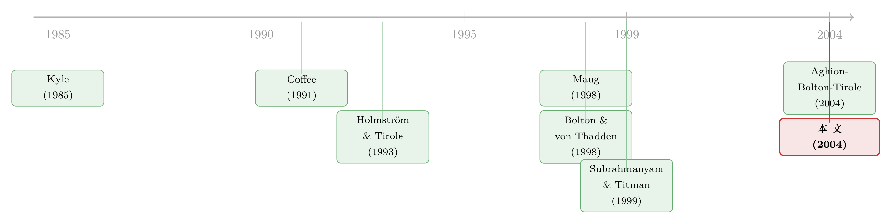

上市，到底是放走了大股东，还是「拴住」了他？
本文读的是 Faure-Grimaud & Gromb (2004, Review of Financial Studies)：公开交易会「炼」出一个含有信息的股价，而这个价格反过来会抬高大股东努力经营的积极性——因为如果他迟早要在真相大白之前卖掉股份，一个更聪明的价格才会替他的努力买单。于是「流动性损害治理」的老故事，被讲反了。
1 一个被讲反了的故事
先说一个几乎写进教科书的直觉。
一家公司里有一个大股东（block holder），他既有控制权、也有足够的利益动机去插手经营，姑且把他叫做内部人（insider）。剩下的股份分散在一群既无力、也无意去管事的小股东——外部人（outsiders）——手里。大股东之所以重要，是因为他能缓解分散持股下那个无处不在的「搭便车」难题 [Shleifer and Vishny (1997)]。
现在给这家公司的股票配上一个活跃的二级市场。传统观点会立刻皱起眉头：市场太好卖了，是坏事。Coffee (1991) 和 Bhidé (1993) 的担忧是——流动性 (liquidity) 让「退出（exit）」这个选项变得太诱人，大股东大可以一拍屁股走人，何必费力去监督、去经营？流动性越好，治理越糟。这就是著名的「流动性—控制权权衡（liquidity-control trade-off）」。
本文偏偏要把这个故事讲反。
它的核心洞见出奇地简单：公开交易这件事本身，会生成一个关于内部人「干了多少活」的信息。一旦股价里掺进了对大股东努力的评价，事情就微妙了。设想一个极端情形——内部人确定要在公司价值被公开披露之前，被迫卖掉自己的全部股份。那么他从自己的努力里能捞回多少好处，完全取决于这份努力有多少被反映进了卖出价。价格越「聪明」，他的努力越能在卖出那一刻兑现成钱，于是他越愿意干活。
把这句话记牢，全文都在反复讲它：正因为大股东可能要提前离场，一个有信息含量的价格才成了奖励他努力的唯一凭据。 公开交易因此具有「规训」效应。
接着，一个自然的问题是：这个「有信息含量的价格」是从哪儿冒出来的？又凭什么去撬动一个人的努力？这两件事，正是模型要一步步搭起来的。
2 模型：四个日期，一个内部人
模型有四个日期、不贴现、所有人风险中性。一家全股权公司，内部人持有 \((1-a)\) 的股份作为一个大宗股权块，剩下 \(a\) 由外部人分散持有。
\(t=1\)：努力。 内部人付出一份不可观测的努力（effort）\(e\)，成本为 \(c(e)=e^2/2\)。努力提高公司价值的方式是：以概率 \((1+e)/2\) 实现高值 \(V=V_H\)，否则 \(V=V_L\)，记 \(\Delta_V \equiv V_H - V_L > 0\)。于是公司的（毛）期望价值是
$$\hat V(e) \equiv V_L + \frac{1+e}{2}\,\Delta_V$$
让公司净价值最大化的一阶最优（first-best）努力水平正好是 \(\Delta_V/2\)。记住这个数，它是后面一切「打折」的基准。
\(t=2\)：价值实现、但不公开。 价值 \(V\) 此刻已定，却要等到 \(t=4\) 才被公众看到。只要公司不是完全私有（\(a>0\)），市场就会按一个简化版的 Kyle (1985) 框架运转：流动性交易者、一个投机者、一个做市商一起把价格 \(P_2\) 撮合出来。注意一个关键假设——内部人不能匿名交易。
\(t=3\)：流动性冲击。 内部人以概率 \(\lambda\) 遭遇一次流动性冲击（liquidity shock），被迫卖出全部股份。论文对这个冲击给了很多接地气的解读：创业者退休、把控制权转给更能干的买家；风险投资人需要套现去投下一个项目；又或者公司本身急需融资、稀释了内部人的股份。因为冲击是被观察到的，他的卖出不携带任何私人信息，因此就按市价成交：\(P_3 = P_2\)。
\(t=4\)：真相大白。 公司价值公开，股东各自拿钱，公司清算为零。
整个张力都压在 \(t=3\) 这个时点上：努力发生在 \(t=1\)，回报却要等到 \(t=4\) 才被世界确认；可大股东偏偏有 \(\lambda\) 的概率必须在 \(t=3\) 就离场。他能不能拿回努力的果实，全看 \(t=2\) 那个价格够不够「懂行」。
3 价格的「信息含量」是怎么炼成的
要让价格「懂行」，得先看投机者（speculator）愿不愿意花钱去懂。
投机者可以付出成本 \(k\)，在 \(t=2\) 立刻看到 \(V\) 的实现值（这个 \(k\) 服从某个已知分布，c.d.f. 记为 \(F\)）。如果他知情，最优策略是：\(V=V_H\) 时提交需求 \(d_S=0\)，\(V=V_L\) 时提交 \(d_S=-d\)——任何别的下单都会暴露身份、毁掉他的交易利润。流动性交易者的总需求 \(d_L\in\{-d,\,0\}\)，各以一半概率出现。当投机者的单子和流动性单子「撞车」（\(d_S=d_L\)，概率 $1/2$）时，做市商能精确推断方向、价格完全揭示信息；否则做市商只能把价格定在 \(P_2=\hat V(e^a)\)，这里 \(e^a\) 是他对内部人努力的预期。
由此，知情交易的期望利润是
$$\pi(e^a)=\frac{1}{2}\cdot\frac{1-e^a}{2}\cdot d\cdot\bigl[\hat V(e^a)-V_L\bigr]=\frac{d\,\Delta_V\,\bigl(1-(e^a)^2\bigr)}{8}$$
投机者只有在预期利润 \(\pi \geq k\) 时才肯付费变成知情者，这件事发生的概率是 \(F(\pi)\)。于是，价格 \(P_2\) 含有信息的概率——本文称之为价格信息含量（price informativeness） \(p\)——为
$$p(e^a)=\frac{1}{2}\,F\bigl(\pi(e^a)\bigr)=\frac{1}{2}\,F\!\left(\frac{d\,\Delta_V\,\bigl(1-(e^a)^2\bigr)}{8}\right)$$
Lemma 1 给出它的比较静态：把 \(e^a\) 当作外生时，价格信息含量 \(p\) 随流动性交易的波动 \(d\)、股票的信息敏感度 \(\Delta_V\)、以及 \(F\) 向更低 \(k\) 的（一阶随机占优）移动而上升；并且随 \(e^a\) 上升而下降。
最后这一点有点反直觉，但很重要：努力 \(e\) 越高，价值分布越「往上挤」、方差越小，信息就越不值钱——所以更努力的公司，其价格反而更难被投机者「赚到」。这是后面均衡里一个内生的负反馈。
论文把「更发达的金融市场」诠释为更大的 \(d(a)\)（更深的流动性）和更低的 \(k\)（更多、更专业的投机者）。作者自己在脚注里诚实地提了个警告：发达市场往往也有更严的披露规则，反而会让私人信息更稀缺、获取成本更高。所以「发达市场 = 低 \(k\)」这个解读，得假设披露效应不压倒成本效应。
4 核心方程：努力为什么被价格「撬动」
现在把两边接起来。假设内部人在 \(t=3\) 遭遇流动性冲击、被迫清仓，他预期价格以概率 \(p^a\) 完全揭示信息、否则等于 \(\hat V^a\equiv\hat V(e^a)\)。他在 \(t=1\) 选择努力时的期望收益是
$$\max_{e}\;-\frac{e^2}{2}+\frac{1+e}{2}(1-a)\Bigl[\lambda\bigl(p^a V_H+(1-p^a)\hat V^a\bigr)+(1-\lambda)V_H\Bigr]+\frac{1-e}{2}(1-a)\Bigl[\lambda\bigl(p^a V_L+(1-p^a)\hat V^a\bigr)+(1-\lambda)V_L\Bigr]$$
对 \(e\) 求一阶条件。妙处在于：两支里那个「价格没揭示信息」的项 \((1-p^a)\hat V^a\) 在做差时完全抵消了——内部人对它无能为力，自然也就激励不了他。剩下的高低值之差是 \(\Delta_V\bigl[\lambda p^a+(1-\lambda)\bigr]=\Delta_V\bigl[1-\lambda(1-p^a)\bigr]\)。于是均衡努力为
这一个方程，把全文讲透了。它揭示了内部人激励的双重来源（Lemma 2）：
- 直接效应：努力随持股 \((1-a)\) 上升。这是 Jensen and Meckling (1976) 以来的老道理——股份越大，越内化努力的好处。
- 间接效应：努力随价格信息含量 \(p^a\) 上升。这才是本文的新意所在。
把 \(\lambda\) 推到极端最能看清。若 \(\lambda=0\)（永不离场），\(e=(1-a)\Delta_V/2\)，标准的道德风险问题，价格无关紧要。可一旦 \(\lambda=1\)（必然离场），内部人的收益只取决于 \(t=3\) 的卖出价：若他预期价格毫无信息（\(p^a=0\)），努力的边际激励直接归零；价格越聪明，他越愿意干。一般地，他要以概率 \(\lambda(1-p^a)\) 在一个不含信息的价格上卖出，这正是方程里那个折扣因子。
均衡 \((e^*,p^*)\) 由 \(p^*=p(e^*)\) 与 \(e^*=e(p^*)\) 联立确定。Proposition 1 给出它的性质：均衡努力 \(e^*\) (i) 随价格信息含量函数的上移而增加；(ii) 随股票信息敏感度 \(\Delta_V\) 增加；(iii) 随流动性冲击概率 \(\lambda\) 减少。
（关于「老板究竟有没有盯着股价做决策、价格里那条信息暗线如何反过来作用于实体」，可参见《老板到底有没有在「看股价」做投资？》与《老板不看股价，股价却替他重新分了钱》。）
5 三个反转：上市、资本结构与证券设计
到这里，一个简单的洞见开始生出一连串「反转」。
反转一：上市是一种规训。 既然价格信息含量能抬高大股东努力，那么把股票拿去公开交易、让它被积极地买卖，本身就会改善公司资源配置。对一个创业者而言，活跃的二级市场反而逼他把公司资源用在所有股东身上、而非攫取私利。更进一步，这份「上市带来的价值增量」有时是创业者当初愿不愿意创办公司的关键——于是一个活跃的 IPO 市场，可能反过来催生整个创业与风险投资生态。这对欧洲那场「如何扶持创业」的政策辩论，恰好是一记注脚。
反转二：上市是信息需求，而非融资需求。 这给「上市决策（going-public decision）」提供了一个新理论：越是其内部人更可能遭遇流动性冲击的公司，越倾向于上市。因为这类内部人对「将来要以什么价卖出」赋予更大权重，他们的激励更依赖价格信息含量。在这个视角下，上市是为了信息、而非为了眼前的钱——而信息需求本身又可能对应着未来的融资需求：上市公司因此更可能在日后继续发售证券。（关于上市时机作为一份「可赎回的期权」，可参见《上市不是终点，是一份你随时可以「赎回」的期权》。）
反转三：一种「颠倒」的啄食顺序。 本文把逻辑延伸到证券选择上，露出一对张力：一方面，要给内部人直接激励，他手里的份额价值应当紧贴公司价值，即价值敏感（value-sensitive）——股权显然比一份安全的债权更好；另一方面，要让交易能生成信息，对外发行的证券就得信息敏感（information-sensitive）——交易一笔几乎无风险的公司债，根本榨不出多少关于内部人活动的信息。于是最优的证券设计要在「内部人份额的价值敏感」与「外部人份额的信息敏感」之间取舍。当后者占上风时，会冒出一个与标准啄食顺序相反的结论：公司偏好发行信息敏感的公开交易证券——这正好顶撞了 Myers and Majluf (1984) 那个「优先发行信息不敏感证券」的经典啄食顺序。
别忘了这里埋着一个根本性的冲突：内部人的份额在完全持股（\(a=0\)）时最大、直接激励最强，可那恰恰意味着没有公开交易、价格信息含量为零。持股集中度与价格信息含量，天然是一对此消彼长的对手。 本文的全部张力，最终都收束于此。
6 当内部人开始「策略性」交易
模型的第三节放松了一个假设：让市场参与者不知道内部人卖出的动机，于是卖出本身可能透露关于公司价值的信息——这就是策略性交易（strategic trading）。
这一层之所以重要，是因为策略性交易的获利取决于信息不对称的程度，而信息不对称又被公开交易所影响。公开交易降低了信息不对称，可能削弱内部人在「手握好消息」时那种舍不得卖的惜售心理——这又开辟了公开交易影响激励的另一条通道。
论文在这里有两个尤其值得记住的发现（这一节正文较为技术，我只点出结论）：其一，价格信息含量的上升，并不必然抬高无条件的退出概率——因为它通过对努力的反馈效应，改变了状态的分布；其二，即便退出概率确实上升了，努力也仍然增加。换言之，「更易退出 = 激励更差」这个朴素等式，在这里被两次绕开。
7 文献脉络
把这条线索捋一遍，能更清楚地看到本文站在哪儿。
故事的起点，是「流动性—控制权权衡」：Coffee (1991) 与 Bhidé (1993) 主张，市场流动性通过抬高退出选项的吸引力，削弱大股东的监督激励。第一次反弹来自把流动性建模为「藏住自己交易的能力」的一派——Kyle and Vila (1991)、Kahn and Winton (1998)、Maug (1998)、Noe (2002)——他们论证流动性反而能催生积极投资者：因为股票够流动，积极投资者可以悄悄、廉价地建仓，从而捕获自己将带来的价值增量。本文为聚焦自己的主效应，反其道假设内部人不能秘密交易，在这点上更接近 Bolton and von Thadden (1998a)。

「股价信息对内部人有用」这个念头，在 Fishman and Hagerty (1989) 那里已有雏形——抛开激励问题，公司也可能为提高股价效率而主动披露。而在形式上，本文一部分论证与 Diamond and Verrecchia (1982)、尤其是 Holmström and Tirole (1993) 相通：公开交易生成的信息被用来改进受雇经理人的激励合约。本文的不同在于，内部人的股权本身就是一份激励方案，其「力度」被公开交易内生地改变；而且关键在于，这里的交易生成的是关于内部人活动、而非仅仅外生噪声的信息。最接近的当属 Aghion, Bolton, and Tirole (2004) 对「积极监督者退出期权设计」的分析——两个模型里内部人的退出都削弱激励、又都被信息所缓和；区别在于他们聚焦退出期权的契约设计，而本文不直接处理治理退出的契约。沿着上市决策这条支线，则有 Subrahmanyam and Titman (1999) 把「上市还是不上市」与所要生成的信息性质联系起来。
（关于「提前卖出一笔股权如何反过来塑造控制权与激励」，可参见《一笔提前卖出的股权，是为了让你将来「抢着加价」》。）
评论与延伸（Q&A + 研究方向）
(a) 几个可能的疑问
Q：这篇和「流动性催生积极投资者」那一派（Maug 1998 等）到底差在哪？
差在「流动性」起作用的渠道完全不同。Maug 等人靠的是隐藏交易：流动性让积极投资者能悄悄、便宜地建仓，从而内化价值增量。本文明确假设内部人不能匿名交易，流动性起作用靠的是另一条腿——它生成了一个关于努力的信息性价格，在内部人被迫离场时充当奖励凭据。两者不矛盾，但机制正交。
Q：核心结论是不是高度依赖「内部人迟早要卖」这个设定？
是的，\(\lambda\) 是命门。当 \(\lambda=0\)，价格信息含量的间接效应彻底消失，模型退化成标准道德风险。正因如此，本文反而把这点变成了可证伪的预测：内部人越可能遭遇流动性冲击的公司，越该上市。这也是它「上市是信息需求而非融资需求」论断的根基。
Q：「持股越大激励越强」与「上市才有信息含量」难道不冲突吗？
恰恰冲突，而且这冲突是本文的核心张力。直接激励在 \(a=0\)（完全持股）时最强，但那意味着没有公开交易、\(p=0\)。所以「持股集中度」与「价格信息含量」不可能各自最大化，最优设计是一种权衡——这也直接通向它对证券设计的讨论。
Q：为什么会得到一个「反向啄食顺序」？这不和 Myers-Majluf 打架吗？
表面打架，实则各管一段。Myers and Majluf (1984) 关心的是发行时的逆向选择，故偏好信息不敏感证券；本文关心的是发行后交易能否生成关于内部人努力的信息，故对外发行的证券需要信息敏感。当「生成信息」这个目标占上风时，结论就反过来：公司偏好发行信息敏感的公开证券。
Q：把流动性冲击 \(\lambda\) 当外生，会不会太省事了？
这是诚实的简化。现实中流动性冲击（退休、转让控制权、外部投资机会、再融资稀释）显然与公司、与内部人的类型相关。模型用一个外生概率换来了干净的闭式解和清晰的比较静态；代价是它无法说清「谁、为何、何时」遭遇冲击——这恰好是后续实证可以接手的地方。
Q：「不能匿名交易」这条假设有多关键？
很关键，但作者把它当作聚焦工具而非软肋。它的作用是把本文与「隐藏交易」那一派切割开来，逼出纯粹的「信息性价格→激励」渠道。作者也说模型能容纳有限的秘密交易；脚注甚至指出，允许 \(t=2\) 公开交易 + \(t=3\) 向知情者私下出售，反而可能强化结论。
(b) 几个可能的研究问题与提案
1. 把「信息含量提升激励」搬到公司债市场。 【经济故事】本文预言：内部人份额要价值敏感、对外证券要信息敏感，二者交易才生成有用信息。公司债通常被视作信息不敏感，但高收益债、可转债显然不是。一个自然的问题是：当一家公司的债券交易更活跃、价格更含信息时，其大股东/管理层的努力（或私利攫取）是否被规训？ 【可行性】中。可用 TRACE 的公司债成交数据构造价格信息含量代理（成交频率、价格冲击），匹配治理与投资变量。识别难点在于「债券流动性」与「治理」互为内生——需要外生流动性冲击（如指数纳入、做市商进出、监管透明度实验）做工具。
2. 流动性冲击的外生化：风投退出窗口作为自然实验。 【经济故事】模型的灵魂是 \(\lambda\)——内部人「迟早要卖」的概率。风投基金有硬性存续期，临近清算时被迫退出投资组合公司，这是一个近乎外生的 \(\lambda\) 冲击。基金到期压力越大的被投公司，其上市选择、努力/经营改善是否更依赖二级市场的价格信息含量？ 【可行性】高。风投基金的成立年份与存续期可观测，被投公司层面的 IPO、经营指标可得；用「基金距到期年数」作为 \(\lambda\) 的外生变动来源，是较干净的识别。
3. 外资持有人作为「信息生成者」。 【经济故事】本文里价格信息含量取决于投机者获取信息的成本 \(k\) 与流动性深度 \(d\)。外资进入往往同时改变两者——既带来更专业的信息生产，也改变流动性结构。一国放开外资可投资度后，本地大股东的努力/治理是否随之改善，且这种改善是否经由「价格更含信息」这条中介渠道？ 【可行性】中。可借「可投资度（investability）」放开作为准自然实验（已有大量跨国研究铺路），用价格非同步性等代理价格信息含量做中介分析。难点是把「信息渠道」与「资本成本渠道」分开。
4. 证券设计的张力：内部人份额价值敏感 vs 对外证券信息敏感。 【经济故事】本文给出一个未被充分实证检验的预测：最优证券设计要平衡两种敏感性。那些内部人面临更高流动性冲击概率的公司，是否更倾向于发行信息敏感的对外证券（股权、可转债），而非安全债？ 【可行性】中。需要识别「内部人流动性冲击概率」的横截面代理（VC 持股、创始人年龄、控制权转让倾向），匹配发行证券类型。识别上要小心，因为证券类型也由税盾、逆向选择等多重力量决定。
参考文献
- Aghion, P., P. Bolton, and J. Tirole (2004). Exit Options in Corporate Finance: Liquidity versus Incentives. Review of Finance.
- Bhidé, A. (1993). The Hidden Costs of Stock Market Liquidity. Journal of Financial Economics 34, 31–51.
- Bolton, P., and E.-L. von Thadden (1998a). Blocks, Liquidity, and Corporate Control. Journal of Finance 53(1), 1–25.
- Coffee, J. (1991). Liquidity versus Control: The Institutional Investor as Corporate Monitor. Columbia Law Review 91, 1277–1368.
- Diamond, D. W., and R. E. Verrecchia (1982). Optimal Managerial Contracts and Equilibrium Security Prices. Journal of Finance 37, 275–287.
- Faure-Grimaud, A. (2002). Using Stock Price Information to Regulate Firms. Review of Economic Studies 69, 169–190.
- Faure-Grimaud, A., and D. Gromb (2004). Public Trading and Private Incentives. Review of Financial Studies 17(4), 985–1014.
- Fishman, M. J., and K. M. Hagerty (1989). Disclosure Decisions by Firms and the Competition for Price Efficiency. Journal of Finance 44, 633–646.
- Holmström, B., and J. Tirole (1993). Market Liquidity and Performance Monitoring. Journal of Political Economy 101, 678–709.
- Jensen, M. C., and W. Meckling (1976). Theory of the Firm: Managerial Behavior, Agency Costs and Ownership Structure. Journal of Financial Economics 3, 305–360.
- Kahn, C., and A. Winton (1998). Ownership Structure, Speculation and Shareholder Intervention. Journal of Finance 53, 99–129.
- Kyle, A. S. (1985). Continuous Auctions and Insider Trading. Econometrica 53, 1315–1335.
- Kyle, A. S., and J.-L. Vila (1991). Noise Trading and Takeovers. RAND Journal of Economics 22, 54–71.
- Maug, E. (1998). Large Shareholders as Monitors: Is There a Trade-off between Liquidity and Control. Journal of Finance 53, 65–98.
- Myers, S. C., and N. Majluf (1984). Corporate Financing and Investment Decisions When Firms Have Information That Investors Do Not Have. Journal of Financial Economics 13, 187–221.
- Noe, T. H. (2002). Investor Activism and Financial Market Structure. Review of Financial Studies 15, 289–318.
- Shleifer, A., and R. W. Vishny (1997). A Survey of Corporate Governance. Journal of Finance 52, 737–783.
- Subrahmanyam, A., and S. Titman (1999). The Going Public Decision and the Development of Financial Markets. Journal of Finance 54, 1045–1082.